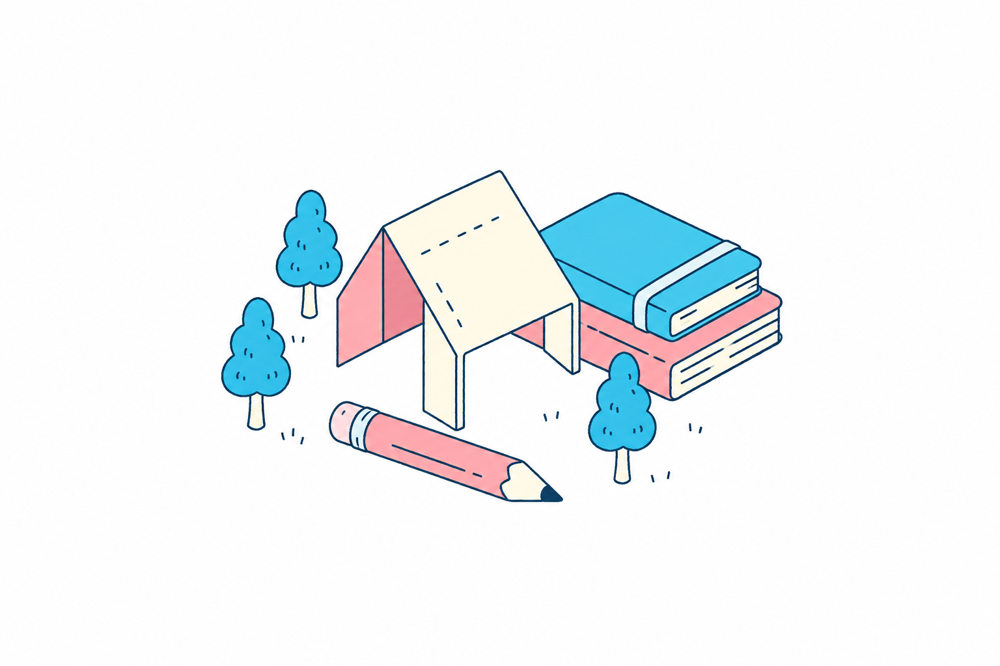

THE WORK IS IN THE DETAILS.
Good work.
Last details.
A little room for the last details. Collect feedback, track fixes, and carry the work forward.
What is Proofroom?Nothing in this view.
Try another filter or add your first piece of feedback.
A place for
unfinished things.
Proofroom is a lightweight feedback desk for reviewing websites, designs and creative work. Keep the details out of scattered messages and in one editable list.
Explore the code on GitHub- Leave a note.
Add the change, context, owner and priority. Start with the fictional sample notes or make it your own.
- Move it along.
Switch between Open, In review and Resolved. Search or filter to see what needs attention.
- Take it with you.
Export a JSON handoff for backup or import it into another browser. Import replaces that browser’s workspace.
No account. No server. Notes stay in this browser. Export before clearing browser data. This is a solo demo, not a shared or automatically synced team workspace.